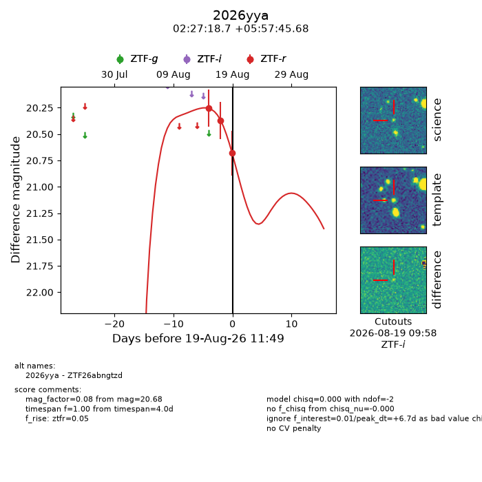
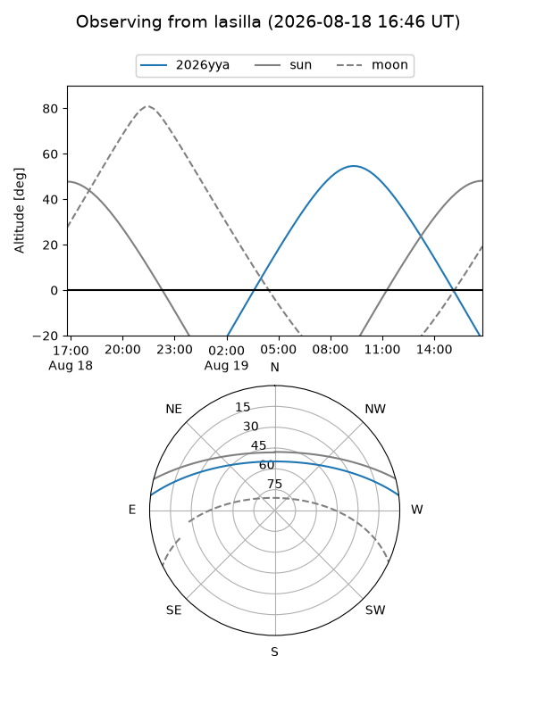
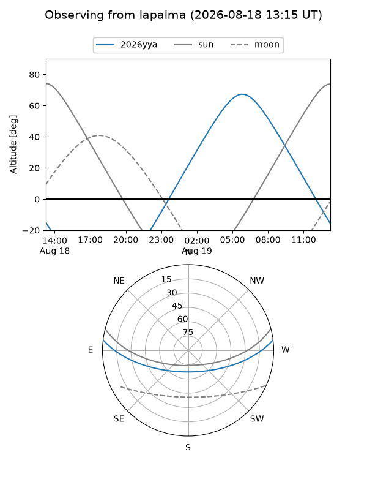
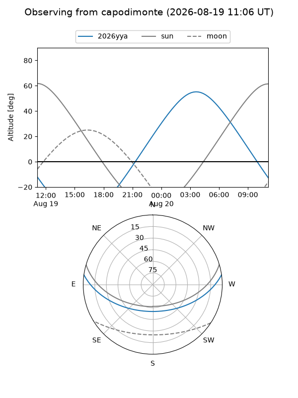
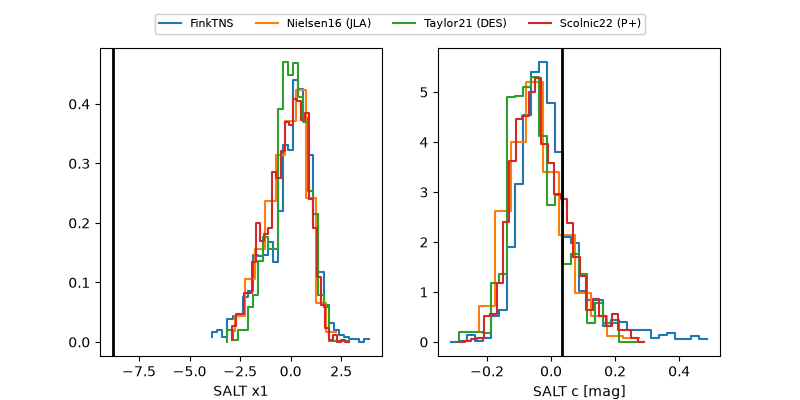

2026yya
Target 2026yya at 2026-08-19 11:52
Aliases and brokers:
FINK-ZTF: ztf.fink-portal.org/ZTF26abngtzd
Lasair-ZTF: lasair-ztf.lsst.ac.uk/objects/ZTF26abngtzd
ALeRCE-ZTF: alerce.online/object/ZTF26abngtzd
YSE-PZ: ziggy.ucolick.org/yse/transient_detail/2026yya
TNS name: wis-tns.org/object/2026yya
Direct TNS query: direct search
alt names
ZTF26abngtzd (ztf,fink_ztf)
2026yya (tns,yse)
Coordinates:
equatorial (ra, dec) = 36.8281,+5.96269
equatorial (HMS+DMS) = 02:27:18.74,+05:57:45.68
galactic (l, b) = (161.4915,-49.59441)
Flags:
TNS type: nan
peak dt: +6.7
Photometry:
last ztfr=20.68
3 ztfr detections
Lightcurve

Visibility



Additional plots
